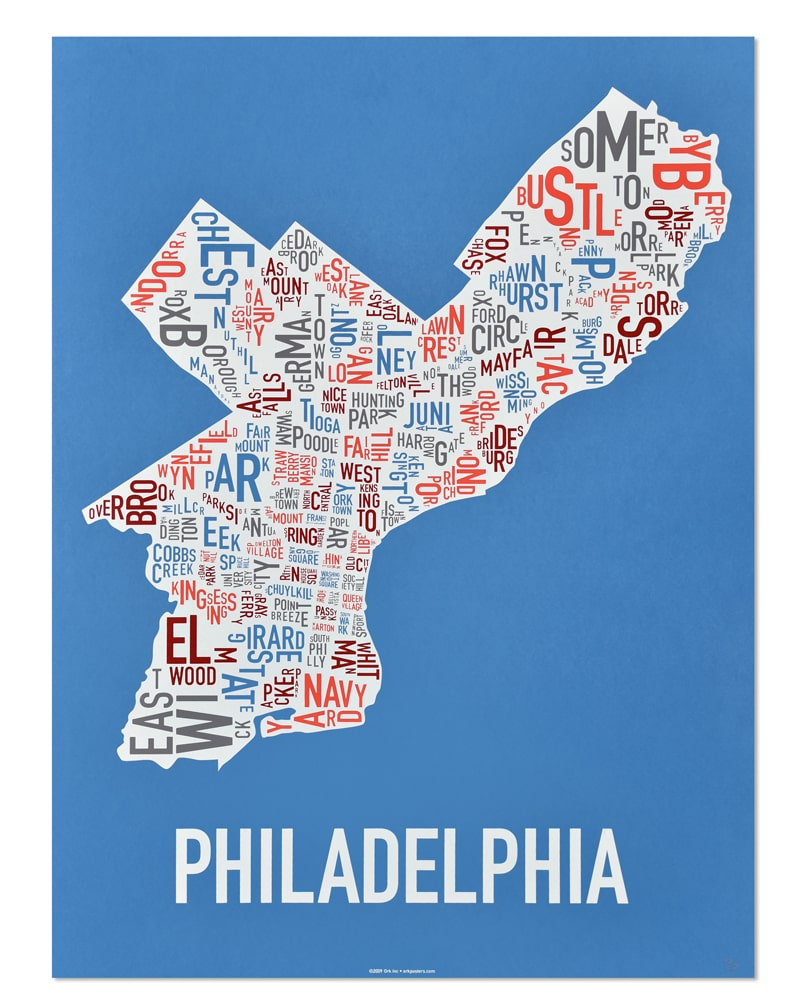

About Me
Learn all about me, and who I am!
Background:
I was born in Philadelphia and have lived here all my life. I’m a creative mind who likes to take things slow and peacefully, and I love animals. When it was time for me to apply for universities, I was unsure of where I wanted to go or what I wanted to do. Drexel’s opportunities stuck out to someone like me, and it was during my first year I discovered my love for learning design, and found a place in the UXID major.
Experience:
I have three years of experience taking courses in design and working on different design projects, ranging in scope from proof of concepts to full interactable designs and web pages, as well as co-op experience which strengthens my ability to work in a team, complete professional quality work, and focus on meeting client needs.

Goals:
My goal is to learn more about the world through design. I love to create designs because I find it to be a wonderful expression of creativity, and a way to expand my thinking in unique ways to accommodate for different people. It’s a gateway to learn more about people all while creating something new and unique, and I love being able to make something new and impactful.
Contact Information:
- Email: cs3878@drexel.edu
- Phone: (267)-800-6507
-
 LinkedIn
LinkedIn